Наука · журнал «ДентАрт» 2018 №3
Морфоархітектоніка оклюзійних і проксимальних поверхонь перших постійних молярів верхньої і нижньої щелеп. Частина V
MORPHOARCHITECTONICS OF OCCLUSAL AND PROXIMAL SURFACES OF THE FIRST CONSTANT MOLARS OF MAXILLA AND MANDIBLE. PART V
Олександр Постолакі,ДУМФ ім. Ніколає Тестеміцану (м. Кишинів, Республіка Молдова)
Завдяки точно визначеному плану будови, жорстко контрольованому спадковими факторами, чіткій, майже математично стрункій системі варіацій, зуби служать чудовою опорою для систематики.
О.О. Зубов. «Одонтологія. Методика антропологічних досліджень»
У попередніх статтях ми докладно розглянули зубощелепний апарат і міжзубні проксимальні контакти, встановивши їх складну анатомо-топографічну організацію і біомеханічну функцію, а також тісний структурний взаємозв'язок між усіма складовими елементами у багатоланковому характері взаємодії зубо-щелепно-лицьової системи і всього організму. Різні автори і в різний час (М.Д. Гросс, Дж.Д. Метьюс, 1986; В.О. Хватова, 1996; І.В. Джамбровська, 2004; Х. Смуклер, 2006; Дж. Е. Карлсон 2009 та ін.) неодноразово висловлювали тезу про те, що принциповою основою вивчення жувального апарату повинен стати системний підхід, який полягає у вивченні як особливостей складових його елементів, так і характеру співвідношень між ними.4,6,9,15,18 Такі дослідження продовжують робити в різних країнах світу.1,9,12,13,14,16,23,32
Оклюзійні поверхні зубів у поєднанні з СНЩС і нервово-м'язовим апаратом – найважливіші елементи зубощелепної системи у сприйнятті і передачі жувального тиску, які характеризують три основні ознаки центральної оклюзії:
- зубна ознака – максимальний множинний контакт зубних рядів;
- суглобова – суглобова головка нижньої щелепи міститься при основі скату суглобового горбика;
- м'язова – рівномірний тонус жувальних м'язів і м'язів, що опускають нижню щелепу.
Ступінь перекриття зубів у передньому відділі перебуває у прямій залежності від вираженості сагітальної оклюзійної кривої Шпеє і є одним з факторів, що визначають функціональну гармонію. До нинішнього часу відновлення дефектів коронок і зубних рядів, правильних оклюзійних співвідношень, оптимальних за площею фісурно-горбикових контактів і контактних пунктів залишається у реставраційній стоматології однією з актуальних проблем.9,14,16
А.Х. Хотайт, Е.В. Алейникова (2017) поставили за мету з'ясувати стан перших постійних молярів у 160 осіб (73 ж., 87 чол.) у трьох різних вікових групах: 1) 18-19 років – 31 чол.; 20-24 роки – 91 чол.; 3) 65 і старше – 38 чол. Було встановлено, що у молодих людей (18-19 років) перші моляри у 80,0% випадків були нефункціонуючими через значне руйнування коронки зуба у зв'язку з глибоким і ускладненим карієсом. У 20,0% випадків зуби в групу нефункціонуючих були віднесені у зв'язку з їх видаленням. У групі 20-24 років у результаті тих самих етіологічних факторів відсоток нефункціонуючих зубів становив 24,99%, у зв'язку з видаленням – 75,01%.21
Е.А. Брагін, А.В. Хейгетян (2013) у своїй роботі посилаються на дані Long T. D., Smith B.G.N., 1988, які констатували 94% уражень контактних поверхонь бічних зубів з медіально-оклюзійно-дистальними порожнинами (МОД) і 100% уражених поверхонь зубів, препарованих під штучну коронку.4
Група вчених провела пошук і аналіз літератури з січня 1980 до листопада 2015 року, доступної в MEDLINE-PubMed, EMBASE і Бібліотеці Кокрейна, з метою визначити кількість стоматологів, які застосовують інструментальне втручання у постійні бічні зуби з каріозними ураженнями. Огляд охопив 11 наукових статей. Більшість стоматологів відновила б пошкодження, обмежені емаллю в межах поверхневого дентину, незалежно від включеної поверхні. Щодо оклюзійної поверхні відсоток стоматологів, які обмежилися б реставрацією в межах емалі, коливався від 4,6% до 17,8%. За агресивніше втручання в поверхневі шари дентину виступили 50,2-70,2% дантистів. Для суміжної поверхні вибір лікування каріозних уражень у межах емалі коливався від 5% до 88%. При ураженнях дентину від 4,4% до 94% стоматологів інструментальне втручання робили б на рівні поверхневого дентину. Незважаючи на досягнуті успіхи в розумінні розвитку і управлінні карієсом, матеріально-технічне оснащення, основна рекомендація полягає в необхідності лікування на ранніх стадіях захворювання.25
Інші дослідження охопили період 30 років (1983-2014) і 17 країн, головним чином лікування у дорослих (n = 17) карієсу постійних зубів (n = 24). 21% стоматологів провадили інвазивне лікування при каріозних ураженнях, обмежених емаллю (які не досягають дентино-емалевого з'єднання), і 48% – при ураженнях, що доходять до з'єднання дентину і емалі.30
Існує і ряд інших публікацій подібного роду за останні роки (Gordan V.V. 2009, Kopperud S.E., Rechmann P.), де найбільше акцентується увага на цифрах і відсотках і не повідомляється про місце локалізації карієсу емалі жувальної поверхні, про особливості одонтогліфіки ураженої зони, про характер оклюзійних співвідношень і фісурно-горбикові, міжзубні контактні пункти, про те, які методи інструментального втручання застосовувалися, які матеріали для реставрації були використані, і т.д.24,26,29 Найчастіше відповідей на дуже важливі питання, які стосуються строго індивідуального підходу, з використанням мінімально інвазивного втручання, ми не знаходимо або вони частково відображені в поодиноких наукових роботах за останній час, присвячених прямому або непрямому методам відновлення зубів чи цілісності зубних рядів.1,6,7,9,14,15 Водночас зазначається, що мікроагресивне лікування уражень емалі і поверхневого дентину значно ефективніше, ніж неруйнуюче професійне лікування (наприклад, фтористий лак) або поради (наприклад, зубна нитка). Однак через невелику кількість досліджень залишається незрозумілим, яка саме мікроінвазивна техніка найбільш оптимальна і ефективна.22
Справді, успішно себе зарекомендували і стали загальновизнаними у всьому світі науково і методично аргументовані мінімально інвазивні технології препарування і адгезивної реставрації всіх груп зубів, в тому числі і при малих включених дефектах. Вони є головним визначальним моментом у лікувальній тактиці, спрямованій на максимальне збереження форми і об'єму твердих зубних тканин, неповторності індивідуальної архітектоніки жувальної поверхні опорних зубів, що обмежують дефект, і лише в разі потреби лікар зобов'язаний відновлювати втрачену форму, функцію та естетику.
На нашу думку, для досягнення таких завдань уже недостатньо лише знань про загальну морфологію будови зубів, і публіковані раніше результати власних досліджень з науковою достовірністю цілковито це підтверджують. Е.А. Брагін і співавт., 2012, вважають, що «загальноприйняті, усталені канони надання ортопедичної допомоги потребують доповнення методів аналізу та удосконалення підходів до комплексної реабілітації, спрямованих на організацію умов створення індивідуальної оклюзії та артикуляції».3
Тому потрібно розширити базові, фундаментальні знання і практичні навички для встановлення при діагностиці чітких конституційних одонтологічних критеріїв, наприклад, за допомогою запропонованих авторських класифікацій, які є одним з інструментів для точного опису расово-етнічних особливостей індивідуума і дадуть істотну користь при плануванні, прямому чи непрямому методах моделювання, а також при експертизі якості проведеного реставраційного лікування, при ліцензуванні та акредитації закладів стоматологічного профілю, що дозволить значно знизити ризик розвитку ускладнень, пов'язаних з оклюзійними порушеннями (травматична оклюзія) і артикуляцією зубних рядів, зниженням висоти нижнього відділу обличчя, дискоординацією функції жувальних м'язів і СНЩС, порушеннями з боку ЦНС (бруксизм, невралгія, безсоння та ін.), патологією пародонту навіть у пацієнтів з цілісними зубними рядами.1,5,7,18
Таким чином, метою в цій частині нашої роботи було узагальнення анатомо-морфологічних особливостей жувальної поверхні зубів на основі результатів поглиблених расово-етнічних антропологічних досліджень, описаних у спеціальній літературі, де особлива увага звертається на одонтоскопічні, одонтогліфічні та одонтометричні особливості будови зубів, сукупність індивідуалізуючих ознак і, відповідно, проведення деталізації на власному матеріалі і виявлення деяких не відомих раніше зв'язків між окремими параметрами зуба (висота і геометрична форма коронкової частини, форма і топографія міжзубних контактів та кривизна проксимальних поверхонь, кількість і форма горбиків, ступінь розвитку і співвідношення емалевих і крайових гребенів, вираженість природних ямок і фісур, форма і розташування фасеток стирання).
Перший моляр верхньої щелепи
Протоконус і параконус – найбільші і найстабільніші горбики, мало схильні до редукції. Протоконус є зазвичай найбільшим горбиком за площею, але поступається параконусу за висотою. Найбільш архаїчним типом будови мезіального відділу коронки верхнього моляра вважається виражена передня ямка. Вона розвинена у антропоїдів і древніх гомінідів.10
У рідкісних випадках можна спостерігати, окрім крайового гребеня на верхніх молярах (особливо на першому), другий гребінь, паралельний крайовому, що з'єднує протоконус з параконусом і утворений мезіальними гребенями обох горбиків, які зустрічаються під тупим кутом, і тим самим обмежує та ізолює передню ямку, яка утворюється в цьому випадку між ним і крайовим гребенем (рис. 4).10
Гіпоконус відділений від косого гребеня глибокою дугоподібно зігнутою дисто-лінгвальною борозною, яка розрізає край коронки і виходить далеко на лінгвальну поверхню. З'єднання центральної і дисто-лінгвальної борозен у середній частині останньої є вихідним і більш примітивним типом візерунка, у вигляді літери «Н», у порівнянні з іншими варіантами, які зустрічаються у сучасної людини на першому постійному і другому тимчасовому верхніх молярах.
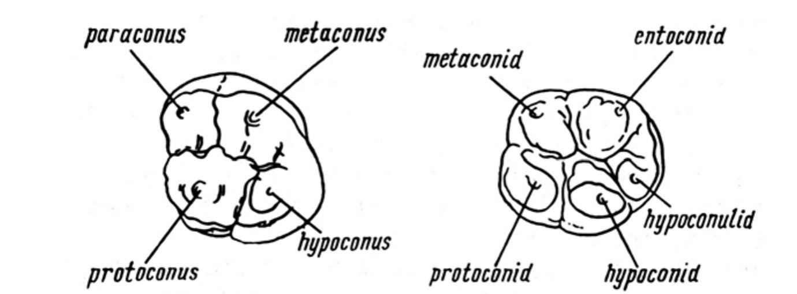
Рис. 1. Вихідні нередуковані типи першого верхнього і нижнього молярів сучасної людини: а) мезіо-лінгвальний, або протоконус; мезіо-вестибулярний, або параконус; дисто-вестибулярний, або метаконус; дисто-лінгвальний, або гіпоконус; б) мезіо-вестибулярний, або протоконід; мезіо-лінгвальний, або метаконід; дисто-вестибулярний, або гіпоконід; дисто-лінгвальний, або ентоконід; дистальний горбик, або гіпоконулід.
У дистальному відділі може бути розвинена задня ямка, в яку впадає борозна. За відсутності ямки можливий інший варіант розвитку дисто-лінгвальної борозни, так само як і мезіальної. Основний стовбур виходить на дистальну поверхню коронки, розрізаючи крайовий гребінь, або ж розділяється у вигляді «вилки», утворюючи невеликий додатковий горбик. Іноді на ньому можна помітити дві невеликі борозенки, що говорять про тричленну будову горбика. Одна з цих борозенок є продовженням центральної борозни коронки. Ступінь вираженості борозен сильно варіює і при посиленні призводить до яскраво вираженого дроблення гіпоконуса, який перетворюється на структуру, що нагадує ланцюжок «чоток», який складається з кількох окремих горбиків (рис. 2).10
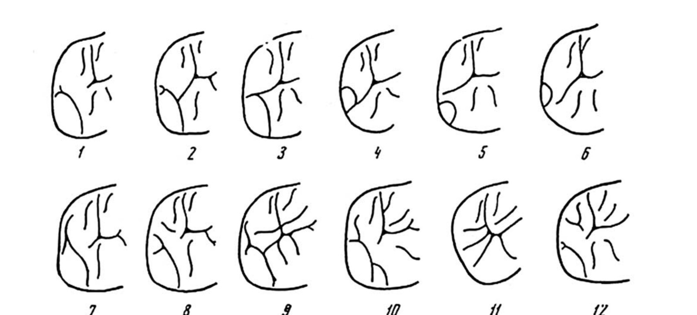
Рис. 2. Візерунок дистальної частини коронки верхніх молярів. Косий гребінь і центральна борозна (1-12).10
Безперервний косий гребінь у межах сімейства гомінідів вважається архаїчною ознакою. У сучасної людини він зберігається на стабільних і консервативних зубах – першому постійному і другому тимчасовому молярах, хоча він буває різко знижений біля центру коронки. На другому і третьому верхніх молярах він, як правило, буває розділений центральної борозною (рис. 1).
Найвища його частина в цій зоні – ребро, що з'єднує протоконус з метаконусом, – лежить дистальніше і обмежує ззаду весь тригон. Гіпоконус (талон) – похідне цингулюма, філогенетично нова частина коронки, міститься позаду крайового гребеня. Як зазначає О.О. Зубов, навіть за високого ступеня диференціації верхніх молярів людини цей горбик залишається трохи нижчим за висотою, ніж горбики тригона.
Протоконус і параконус включають по три складових елементи – гребені, виражені зазвичай досить чітко. Розташування цих елементів щодо частин сусіднього горбика може значно варіювати, внаслідок чого змінюється загальний візерунок борозен, які розділяють гребені.
О.О. Зубов вважає вихідним типом форму, де головні гребені протоконуса і параконуса – найбільші і найширші – спрямовані до центральної ямки. З цього опису випливає, що головні і додаткові гребені (медіальний і дистальний) з борознами, що їх розділяють, які сходяться в центральній ямці, спрямовані в дистальну сторону.
За різних інших варіантів положення головного гребеня протоконуса відповідно змінюється розташування борозен цього горбика. Якщо головний гребінь спрямований не на центральну ямку, а в бік параконуса, то тоді може бути кілька варіантів його форми, напрямку та вираженості борозен (рис. 3):
- головний гребінь розташований навпроти аналогічного гребеня параконуса і разом з передньою і задньою борознами впадає в мезіальну борозну коронки;
- головний гребінь не сягає центральних відділів коронки, тоді борозни зустрічаються на деякій відстані від центральної ямки і мезіальної борозни;
- при масивному і широкому головному гребені борозни розташовуються на більшій відстані, так, що передня впадає в мезіальну борозну, а задня – у центральну.
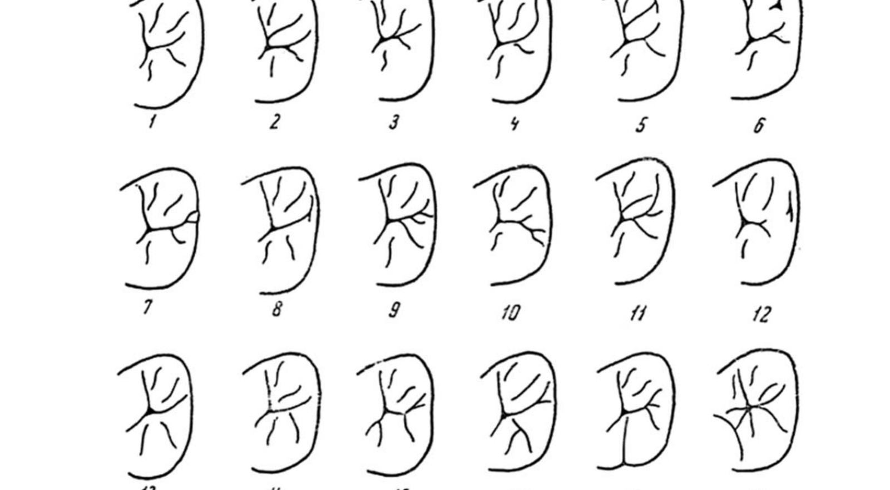
Рис. 3. Варіації візерунка коронки верхніх молярів. 1-6 – будова параконуса, 7-12 – будова зони передньої ямки, 13-18 – будова протоконуса.10
Розміщення задньої борозни протоконуса визначає склад косого гребеня верхніх молярів.10
У результаті проведеного власного дослідження було встановлено певний взаємозв'язок між розміщенням параконуса і протоконуса (мезіально чи дистально), формою коронки, довжиною «плечей крайового гребеня» в зоні цих горбиків і площею проксимального контакту між другим премоляром і першим моляром верхньої щелепи. У тих випадках, коли форма коронки наближається до квадратної або ромбоподібної, «плечі» коротші і крутіші. І навпаки, чим більше витягнута форма коронки, наближаючись до «трапецієподібної», тим лінгвальне «плече» довше і пологіше, а міжзубний контакт менший за площею (рис. 4).
При уважному візуальному огляді і детальному аналізі фотографічних зображень коронок перших молярів in vitro і на діагностичних моделях ми встановили індивідуальні відмінності в напрямку головного і додаткових (медіального і дистального) емалевих гребенів медіального піднебінного горбика щодо вестибулярної борозни і два основних типи з'єднання з дистальним вестибулярним горбиком з утворенням косого емалевого гребеня. Ці морфологічні особливості співвідношень між структурними елементами, які раніше не описані у спеціальній літературі, отримали у нас назву лінійне і кутове.

Рис. 4. Варіанти морфологічної будови коронки і візерунка борозен першого верхнього постійного моляра. Індивідуальні особливості морфології горбиків і емалевих гребенів найбільшого медіального піднебінного горбика. Стрілками позначено напрямок головного і додаткових (медіального та дистального) емалевих гребенів щодо вестибулярної борозни і два основних типи з'єднання з дистальним вестибулярним горбиком з утворенням косого емалевого гребеня. Фото і складена схема О. Постолакі.
Таким чином, морфологія емалевих гребенів, зокрема параконуса і протоконуса, перебуває у тісному взаємозв'язку і з іншими анатомічними елементами коронки, в тому числі міжзубними проксимальними контактами, що безпосередньо впливає на індивідуальні оклюзійні співвідношення (рис. 5).
Відомо, що біомеханіка рухів нижньої щелепи в нормі суто індивідуальна, залежить від анатомії СНЩС і фізіологічно асиметрична, що зумовлено кривизною суглобової ямки на всій її довжині, і має частіше S-подібну траєкторію, ніж лінійну. Чергування діагональних і поперечних рухів нижньої щелепи визначає функціональну морфологію оклюзійної поверхні. Такий характер рухів нижньої щелепи викликає спіралевидний тип стертості зубів, що призводить до індивідуалізації форм оклюзійних кривих і забезпечує множинні міжзубні контакти, гармонійний зв'язок форми і функції СНЩС, зубних рядів і нервово-м'язового апарату.5,12,17,19,31 Безумовно, в розвитку стирання певну роль відіграють рівномірна передача жувального навантаження, характер їжі і фактор тертя. Слід звертати увагу на форму і співвідношення зубних, альвеолярних і базальних (апікальних) дуг, розташування в них зубів і характер їх нахилу, що є також індивідуальними особливостями будови. Базальна дуга – місце, де зосереджується жувальний тиск і беруть свій початок щелепні контрфорси. Це безпосередньо позначається і на характері змикання зубних рядів, який індивідуально різний. Наприклад, при прямому прикусі змикання бокових зубів або відповідає ортогнатичному прикусу, або частіше є міжгорбиковим.19
Leretter M. і співавт. (2003) зазначають, що відомі два основні варіанти оклюзійних контактів у бічних відділах зубних рядів: 1) горбики – центральні ямки і горбики – міжзубні амбразури; б) горбики – центральні ямки і горбики – крайові ямки (мезіальні і дистальні). Міжзубні контакти типу горбики – центральні ямки були описані Saadoun 1972 р. і реалізуються у вигляді триточкових контактів на внутрішніх схилах протилежних горбиків. Міжзубні контакти типу горбики – крайові ямки зустрічаються в нормі у 10-15% випадків і можуть бути у вигляді двох або трьох контактів. Міжзубні контакти типу горбики – міжзубні амбразури зустрічаються в нормі приблизно у 85-95% випадків і можуть бути у вигляді двох, іноді трьох або навіть чотирьох контактів. Цей варіант оклюзійних контактів був описаний Ramfjord і Lundeen (рис. 5).27
О.О. Долгальов, Н.В. Брагарьова (2014 р.) посилаються на дані низки досліджень, які доводять, що «чинники, які призводять до оклюзійних порушень у пацієнтів з цілісними зубними рядами і ортогнатичним видом прикусу, зустрічаються у 84% випадків. Серед них неодночасне і утруднене прорізування третіх молярів, зменшення площі оклюзійних контактів, нераціональне відновлення дефектів твердих тканин бічних зубів прямими композитними реставраціями» (рис. 5).8
Рис. 5. Вершини всіх горбиків молярів з'єднані крайовим емалевим валиком, який обмежує оклюзійну поверхню по периферії, бере участь у перерозподілі жувального тиску, виконує функцію контрфорса. Фасетки змикання зустрічаються різної форми, площі і кута нахилу. Вони часто є безперервним рядом, нерідко у вигляді спіралей, нагадуючи за архітектонікою міжзубні проксимальні контактні майданчики, а разом – складні суглобові поверхні. На площу і топографію оклюзійних контактів, в тому числі і в зоні крайових валиків, впливає і ступінь розвитку опорних і додаткових горбиків, що позначається на формі і висоті коронки зубів у цілому. Також впливає кут нахилу поздовжньої осі зубів (особливо в зоні перших молярів) і кут повороту, в межах кількох градусів, навколо поздовжньої осі бічних зубів, не порушуючи спочатку фізіологічної норми. У свою чергу, змінюються топографія, форма і довжина міжзубних проксимальних контактів. Однак усі ці чинники в комплексі виявляються значущими у біомеханіці жувального апарату і здатні призвести до патологічного формування сагітальної оклюзійної кривої, до підвищеного функціонального навантаження і тертя на окремих ділянках оклюзійних і проксимальних поверхонь (фото О. Постолакі).
В.І. Біда (2002) розглядає організм людини як складну поліморфну саморегульовану біологічну систему, в якій функціонування може відбуватися у вигляді компенсованого процесу, що не виходить за рамки фізіологічних вікових змін, і декомпенсованого, швидко прогресуючого патологічного процесу, наприклад, при втраті емалі і дентину зубів внаслідок дії на них механічних, хімічних чи інших чинників. Як відомо з літератури, у нормі це явище відбувається протягом усього життя людини, і в деяких випадках втрата емалі взагалі клінічно не визначається і коронкова частина зубів зберігає форму ріжучого краю і жувальної поверхні без змін протягом тривалого часу.2
Наш власний досвід клініко-інструментального обстеження пацієнтів і студентів-добровольців стоматологічного факультету, вивчення отриманих діагностичних гіпсових моделей щелеп, внутрішньоротових фотографій і окремо видалених зубів засвідчив, що дійти висновку про наявність початкових ознак втрати емалі можна зазвичай тільки після ретельного аналізу з допомогою застосування спеціальних, але цілком доступних методів у практичній стоматології: одонтометрії, одонтогліфіки, оклюзіографії і оклюзіограм, цифрової фотографії. Так, за нашими спостереженнями, локалізація, геометрія і площа оклюзійних контактів також залежать і від геометричної форми, архітектоніки мікрорельєфу та візерунка жувальної поверхні коронок зубів і кривизни бічних поверхонь, топографії міжзубних проксимальних контактів (рис. 6). Це принципово важливо враховувати, особливо при виготовленні ортопедичних конструкцій за допомогою сучасних технологій, які традиційно передбачають відновлення оклюзійної поверхні зубів класичної анатомічної форми. Як встановила І.В. Джамбровська (2004), з позицій біомеханічної взаємодії, зі збільшенням площі оклюзійних контактних точок при інтактному пародонті, а також при атрофії кісткової тканини різного ступеня напруга зменшується (р<0,05). Зі збільшенням площі однієї з оклюзійних точок зуба напруга зменшується на відповідній поверхні зуба, і навпаки.7
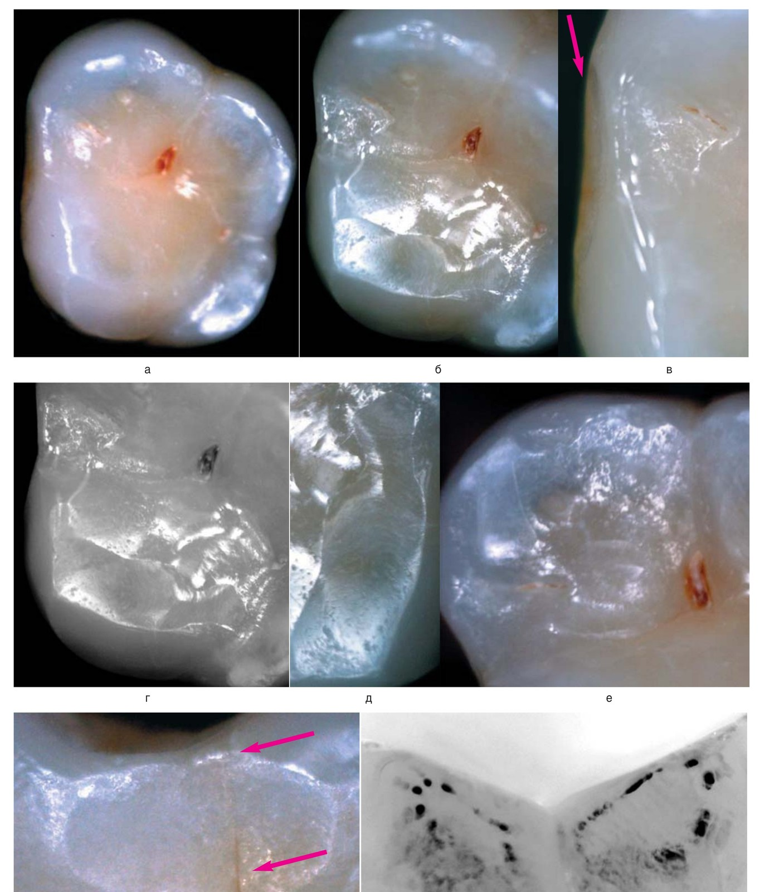
Рис. 6. Зуб 26 з ознаками втрати емалі і згладжування характерних структурних анатомічних елементів на жувальній поверхні коронки. Відзначається збільшення площі і складності мікрорельєфу оклюзійних контактів. Поверхня медіального (є) і дистального (ж) проксимальних контактних майданчиків згладжена і збільшується під впливом підвищеного функціонального навантаження по площі і в глибину. Визначається поздовжня тріщина контактного майданчика до крайового емалевого валика, розташована на рівні оклюзійного скату медіального піднебінного горбика. Поскільки одна або кілька тріщин емалі створюють умови для розвитку карієсу, то їх локалізація і протяжність визначають топографію ураженої ділянки проксимальної поверхні: у верхній, середній або нижній третині коронки зуба. (Мікрофото зб. х25-220. Автор О. Постолакі, 2018).
Таким чином, вивчення характеру контактів змикання і нові уявлення про мікроархітектоніку міжзубних проксимальних контактних майданчиків і оклюзійних фасеток стирання, особливо на горбиках молярів, що утримують висоту прикусу, дозволять на стадії підвищеної втрати емалі зубів своєчасно встановити причини функціонального перевантаження і визначити підходи в ранній профілактиці розвитку ускладнень або лікувальних заходах, пов'язаних з усуненням первинної травматичної оклюзії.
Фото і мікрофотографії дослідженого матеріалу
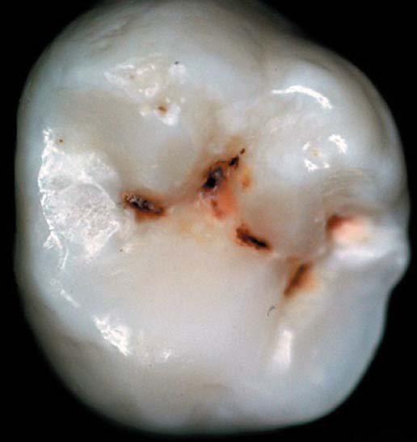
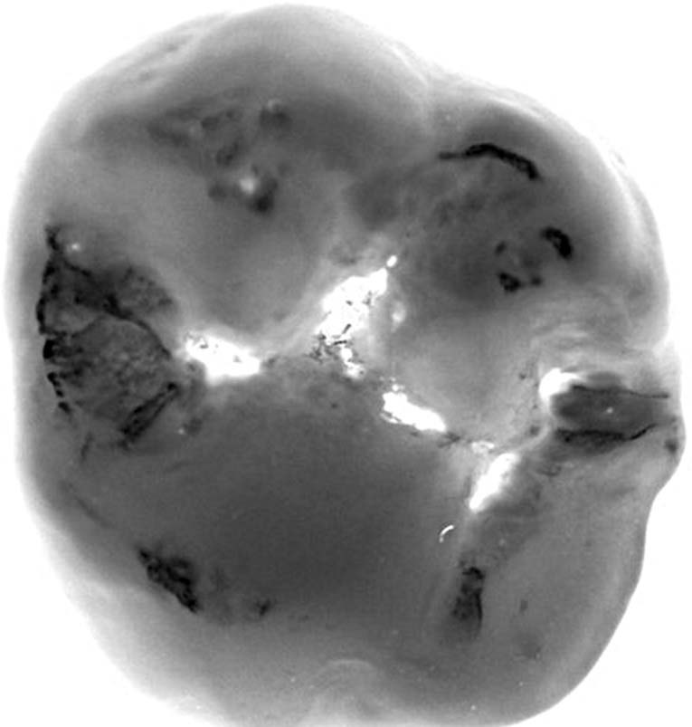
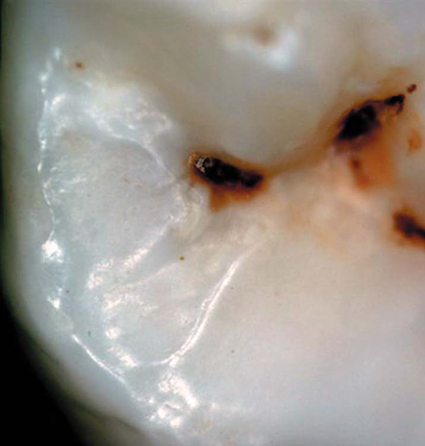
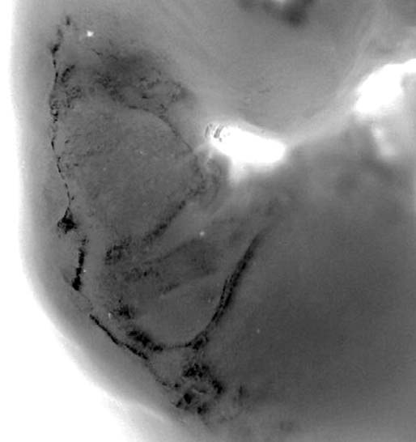
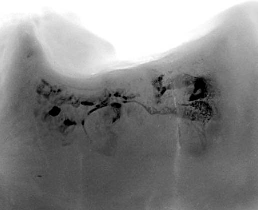
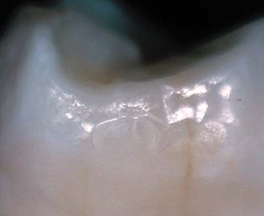
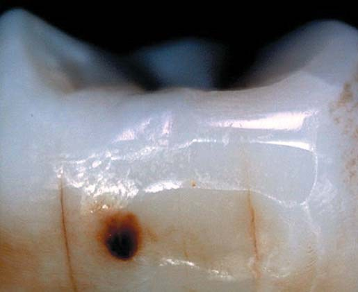
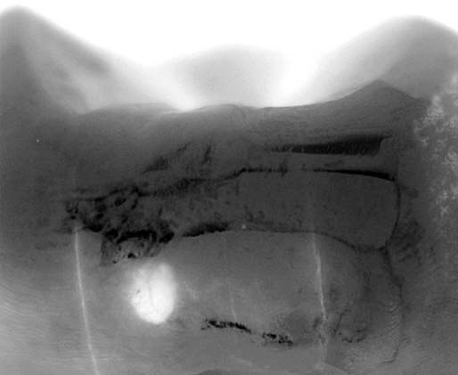
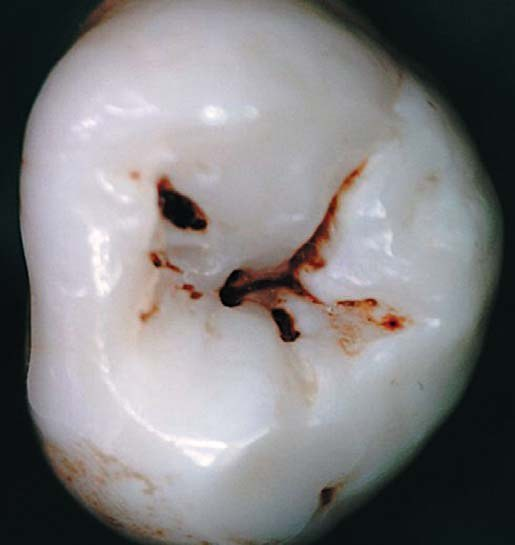
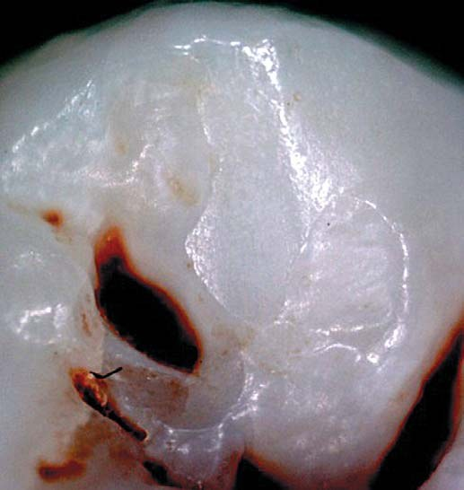
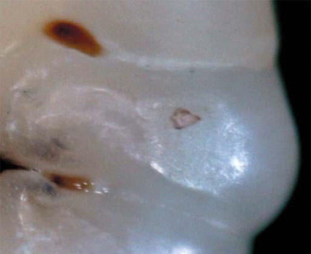
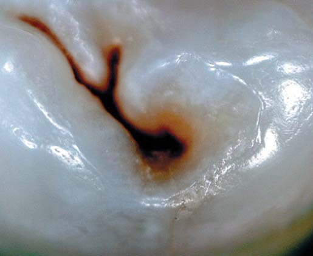
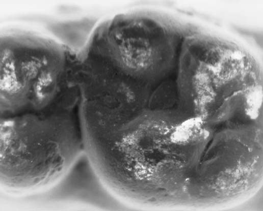
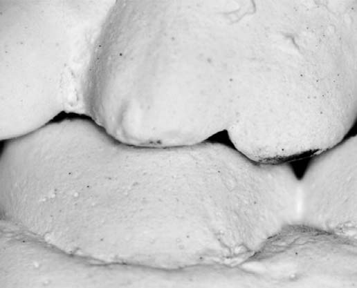
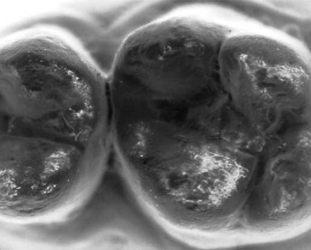
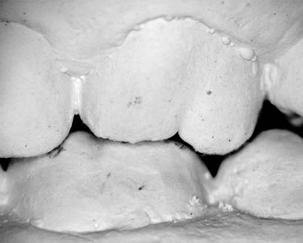
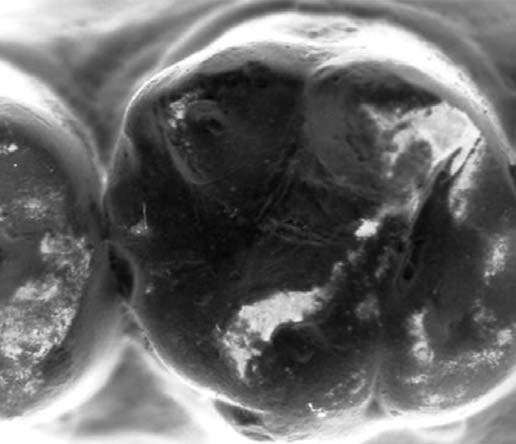
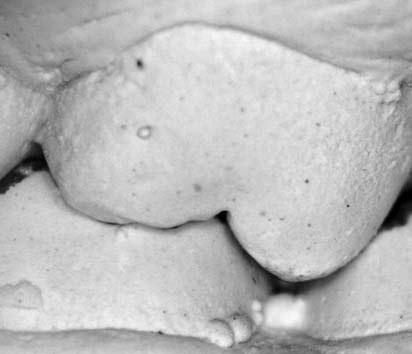
Мікрофотографії оклюзійних поверхонь і проксимальних контактних майданчиків перших постійних молярів, досліджених в рамках цієї роботи (окремі кольорові знімки і їх монохромні варіанти для кращої візуалізації мікрорельєфу). Автор фото О. Постолакі.
Далі буде
Література
- Абдразаков Е.Х. Повышение качества ортопедического лечения с учетом особенностей анатомического рельефа жевательных зубов у лиц различных этнических групп населения Казахстана. Автореф. дис. ... канд. мед. наук: – Алматы, 2010. – 24 с.
- Беда В.И. Клиника и дифференцированный подход к выбору метода ортопедического лечения патологии зубочелюстной системы, осложненной снижением высоты прикуса. – Современная стоматология. – 2002. – № 4. – С. 73–76.
- Брагин Е.А., Долгалев А.А., Брагарева Н.В. Проблема нарушения смыкания зубных рядов у пациентов с ортогнатическим видом прикуса. Медицинский вестник Северного Кавказа. vol. 27, №3, 2012, С. 15–18.
- Брагин Е.А., Хейгетян А.В. Частота встречаемости кариеса контактных поверхностей боковых зубов (II класс по Блэку) по данным панорамной томографии. Кубанский научный медицинский вестник. – № 6, 2013, С. 42–45.
- Гросс М.Д., Мэтьюс Дж.Д. Нормализация окклюзии. М.: Изд-во Медицина. – 1986. – С. 50–52.
- Демчина Г.Р. Прогнозирование кариесрезистентности эмали на основании одонтоглифики первых нижних постоянных моляров. Автореф. дис. … канд. мед наук. – Львов, 2002. – 17 с.
- Джамбровская И.В. Клинико-экспериментальное обоснование способа конструирования окклюзионных контактов зубных рядов. Автореф. дис. ... канд. мед. наук. – Красноярск, 2004. – 23 с.
- Долгалев А.А., Брагарева Н.В. Анализ факторов, приводящих к окклюзионным нарушениям у пациентов с целостными зубными рядами и ортогнатическим видом прикуса // Современные проблемы науки и образования. – 2014. – №1.; URL: http://www.science-education.ru/ru/article/view?id=12095 (дата обращения: 18.06.2018).
- Ершов П.Э. Клинико-функциональное обоснование индивидуального моделирования окклюзионной поверхности несъемных протезов. Автореф. дис. ... канд. мед. наук. – Тверь, 2007. – 20 с.
- Зубов А.А. Одонтология. Методика антропологических исследований / А. А. Зубов; АН СССР. Ин-т этнографии им. Н.Н. Миклухо-Маклая. – М.: Наука, 1968. – 199 с.
- Карлсон Дж.Е. Физиологическая окклюзия. /Пер. Е. Ершова/ Испр. и допол. изд. Изд-во: Midwest Press. – 2009. – 218 с.
- Мамедова Л.А. Основы окклюзии в терапевтической стоматологии: учеб. пособие / Л.А. Мамедова, М.Н. Подойникова, О.И. Ефимович; Моск. обл. науч.-исслед. клинич. ин-т им. М.Ф. Владимирского, Фак. усовершенствования врачей. – М.: 2012. – 44 с.
- Расулов И.М. Одонтологические и одонтоглифические исследования особенностей зубов у лиц различных национальностей и перспективы использования полученных данных в стоматологии. Автореф. дис. ... д-ра мед. наук. – М., 2011. – 46 с.
- Рябов С.В. Клинико-антропометрическое обоснование оформления окклюзионной поверхности искусственных зубных рядов. Автореф. дис. ... канд. мед. наук. – Тверь, 2005. – 20 с.
- Сиренко Е.А. Одонтоглифика малых коренных зубов верхней, нижней челюстей человека в норме и при кариесе. Автореф. дис. ... канд. мед наук. – Киев, 2005. – 15 с.
- Смотрова А.Б. Клинический анализ окклюзионных контактов при прямой и непрямой реставрации зубов жевательной группы. Автореф. дис. ... канд. мед наук. – М., 2012. – 21 с.
- Смуклер Х. Нормализация окклюзии при наличии интактных и восстановленных зубов. /Пер. А. Островского, Е. Ханина/. Изд. Дом «Азбука». М., С.Пб., Киев, Алматы, Вильнюс. – 2006. – 136 с.
- Терещенко Е.Н., Мальковец О.Г., Терещенко М.А. Воссоздание индивидуальности рельефа окклюзионной поверхности зубов. Стоматологический журнал (Минск, Беларусь). – 2010. – Том 11, № 2. – С. 125–128.
- Трезубов В.Н. Ортопедическая стоматология. Пропедевтика и основы частного курса: учеб. для студентов / В.Н. Трезубов, А.С. Щербаков, Л.М. Мишнев; под ред. проф. В.Н. Трезубова. – 2-е изд. – СПб.: СпецЛит, 2003. – 480 с.
- Хватова В.А. Клиническая гнатология. М. Изд-во «Медицина», 2005.
- Хотайт А.Х., Алейникова Е.В. Состояние первых постоянных моляров у людей разных возрастных групп. Медицинский журнал (Минск, Беларусь). – 2006. – №4. – С. 120.
- Dorri M., Dunne S.M., Walsh T., Schwendicke F. Microinvasive interventions for managing proximal dental decay in primary and permanent teeth. Cochrane Database Syst Rev. 2015 Nov 5;(11).
- Felemban N.H., Manjunatha B.S. Prevalence of the number of cusps and occlusal groove patterns of the mandibular molars in a Saudi Arabian population. J. Forensic Leg Med. 2017 Jul;49:54-58.
- Gordan V.V., Garvan C.W., Heft M.W., Fellows J.L., Qvist V., Rindal D.B, Gilbert G.H., DPBRN Collaborative Group. Restorative treatment thresholds for interproximal primary caries based on radiographic images: findings from the Dental Practice-Based Research Network. Gen Dent. 2009 Nov-Dec; 57(6):654-63.
- Jobim Jardim J., Henz S., Barbachan E., Silva B. Restorative Treatment Decisions in Posterior Teeth: A Systematic Review. Oral Health Prev. Dent. 2017; 15(2):107-115.
- Kopperud S.E., Tveit A.B., Opdam N.J., Espelid I. Occlusal Caries Management: Preferences among Dentists in Norway. Caries Res. 2016;50(1):40-7.
- Leretter M., Mari D.A., Fabricky M. Ocluzologie. Ovidius University Press. Constanța, 2003, р. 79-85.
- Yoo H.I., Yang D.W., Lee M.Y., Kim M.S., Kim S.H. Morphological analysis of the occlusal surface of maxillary molars in Koreans. Arch Oral Biol. 2016 Jul;67:15-21.
- Rechmann P., Domejean S., Rechmann B.M., Kinsel R., Featherstone J.D. Approximal and occlusal carious lesions: Restorative treatment decisions by California dentists. J. Am. Dent. Assoc. 2016 May; 147(5):328-38.
- Schwendicke F.J. Restorative Thresholds for Carious Lesions: Systematic Review and Meta-analysis. Innes NPT, Dent Res. 2017 May; 96(5):501-508.
- Wang M., Mehta N.J. A possible biomechanical role of occlusal cusp fossa contact relationships. J. Oral Rehabil. 2013 Jan; 40(1):69-79.
- Yoo H.I., Yang D.W., Lee M.Y., Kim M.S., Kim S.H. Morphological analysis of the occlusal surface of maxillary molars in Koreans. Arch Oral Biol. 2016 Jul;67:15-21.